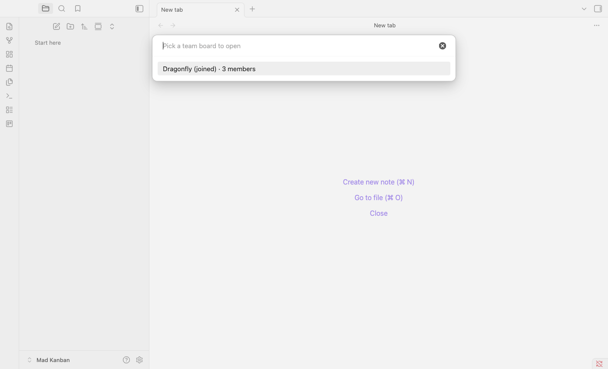

Mad Kanban: Getting Started
How to install Obsidian, connect to the team board and work with tasks. About 10 minutes, no experience needed.
What this is. We keep our tasks on a shared board, like sticky notes on a wall. Each task is a card, and cards move through four columns: To Do, In Progress, Done and Archive. The board runs inside Obsidian, a free app, and stays in sync with everyone: when someone changes a card, you see it within a second.
Every card belongs to a project. You only see the projects you have been added to, so the board may look different for you than for others.
A computerWindows or Mac.
Your join linkSent by your team host. Looks like
http://170.168.60.196:8787/#3f9c…
10 minutesYou only do this once.
Your join link is your password. It signs you in as you. Don't share it or post it in group chats. If you lose it or think someone else has it, ask your host for a new one; the old link stops working.
1 Install Obsidian
- Open obsidian.md/download in your browser.
- Download the version for your computer and install it like any other app.
Windows: run the downloaded .exe file. Mac: open the .dmg file and drag Obsidian into Applications.
- Don't create a vault yet. Do step 2 first.
2 Download the ready-made folder
Obsidian works inside a folder called a vault. We have one ready with the Mad Kanban plugin already installed.
- Download it: http://170.168.60.196:8787/download/mad-kanban-vault.zip
- Move the zip to a place you'll keep it, for example your Documents folder.
- Unzip it. Windows: right-click → Extract All… → Extract. Mac: double-click the zip.
You now have a folder called Mad Kanban.
3 Open the folder in Obsidian
- Start Obsidian. On the welcome screen, choose Open folder as vault → Open, and select the Mad Kanban folder.
(Already used Obsidian before? Click the vault name at the bottom left → Manage vaults… → Open folder as vault.)
- Obsidian asks "Do you trust the author of this vault?" Click Trust author and enable plugins. Without this the board can't load.
4 Connect with your join link
- Click the gear icon at the bottom left to open Settings.
- In the left list, under Community plugins, click Mad Kanban.
- Paste your join link into Team server join string.
- A line below it should say Connected as followed by your name. Close Settings.
Settings → Mad Kanban. After pasting the link it says "Connected as" with your name.
5 Open the team board
- In the thin icon bar on the far left, click the board icon (it says Open a team board when you point at it).
- Pick the board, for example Dragonfly. It opens and appears in your file list, so next time just click it there.

Open a team boardThe board icon in the left bar opens the list of team boards.
That's it, you're set up. The rest of this guide shows how to work with the board.
6 Working with the board
A board. Cards show their priority, due date, tags and who is working on them.
| What you see | What it means |
|---|
| Columns | To Do → In Progress → Done. Archive is for finished cards worth keeping. Drag a card to move it. Click a column name to fold it. |
| Arrow at the top right of a card | Priority, from double arrow up (highest) to arrow down (low). Cards are sorted by priority. |
| Date chip | Due date. It turns yellow when due soon and red when overdue. |
| #tag | Tags, for grouping and filtering. |
| Round initials | The people assigned to the card. |
| Speech bubble | Number of comments. "2 new" means comments you haven't read yet. |
| Coloured chip with a dot | The card's project (shown when you are in more than one project). |
| Cloud at the top left | green: saved and synced yellow: saving orange: offline red: error. Click it to sync again. |
Add a card
- Click + Add a card under a column.
- Type a title and choose the project. You can only choose projects you are in.
- Press Enter or click Add card.
The Add card window with the project choice.
7 Inside a card
Click a card to open it.
The card window: description, checklist and comments on the left, details on the right.
- Description: click Edit to write. You can paste screenshots straight in; click an image to see it full size.
- Checklist: small steps inside the task. Tick them off as you go.
- Comments: talk about the task. Point at a comment to Reply to it or Edit your own. Use Attach for images and videos. Ctrl/⌘ + Enter sends.
- Right side: Project, Status (column), Priority, Due date, Assignees, Tags and Attachments. Changes save on their own.
- Press Esc or click × to close.
Find cards quickly
The bar above the board filters by Project, Assignee, Priority, Due and Tags. Choose Assignee → Me to see just your work. Your filters are remembered. The magnifier searches card text.
Archive or delete a card
Archive: drag the card into the Archive column. Delete: start dragging a card and a Delete area appears at the bottom of the screen; drop the card there and confirm.
Updates
The plugin updates itself. When a new version arrives you'll see "Mad Kanban was updated". Click Click here to reload it now.
? If something doesn't work
| Problem | What to do |
|---|
| The board doesn't open, or there's no board icon | The plugin is off. Settings → Community plugins: make sure Restricted mode is off and Mad Kanban is switched on. |
| "Not connected" or "Connection failed" | Check your internet, and that you pasted the whole link, including the part after #. |
| "Cannot reach team server", or the cloud is orange | No connection to the server. You still see the last loaded board. It syncs again when the connection is back. |
| "You are not in any project yet" | Ask your host to add you to a project. |
| A card a colleague mentions isn't on your board | It's in a project you're not in. Ask your host if you need access. |
| Lost your link, or new computer | Ask your host for a new link and paste it in Settings → Mad Kanban. The old link stops working. |